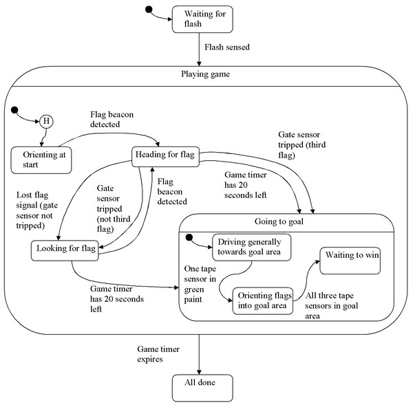

Code Overview
We implemented our strategy using a state chart. The master state machine is responsible for starting the robot at the flash, and stopping it once two minutes elapses. The game playing state machine deals with finding and getting the flags, keeping track of how many flags have been captured, and going to the goal zone when three flags have been captured or time is running out. There is a separate state machine for going to the goal because of its complexity. This state machine guides the robot in the rough direction of the goal, and then lines it up more precisely once the robot had hit the goal zone paint.
The low level functions of our robot are handled by different software modules. Each state machine also has its own module. These modules are listed below, with links to the module page. You can also download a zip of all of the E128 code here, and the C32 code here.